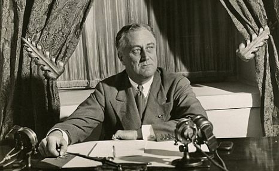
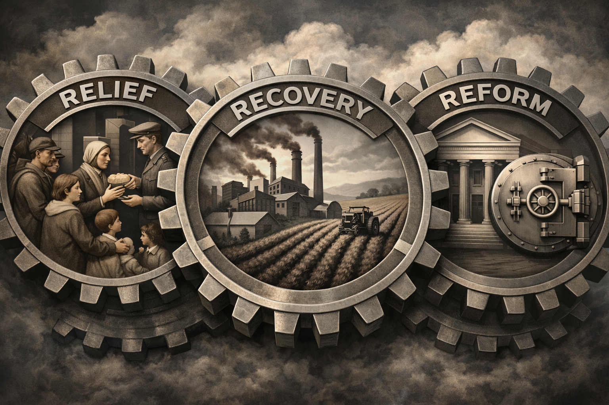
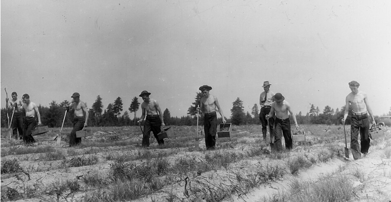
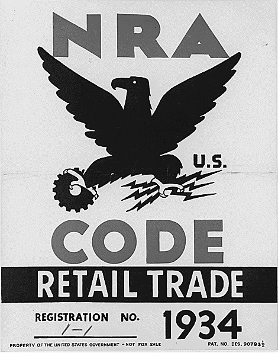
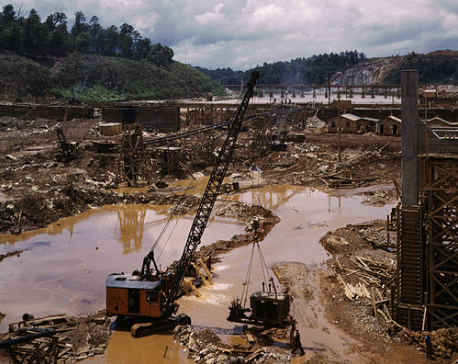
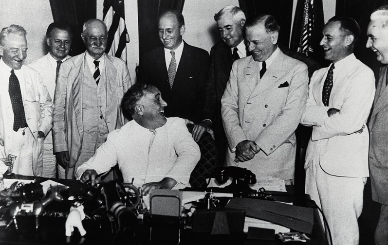
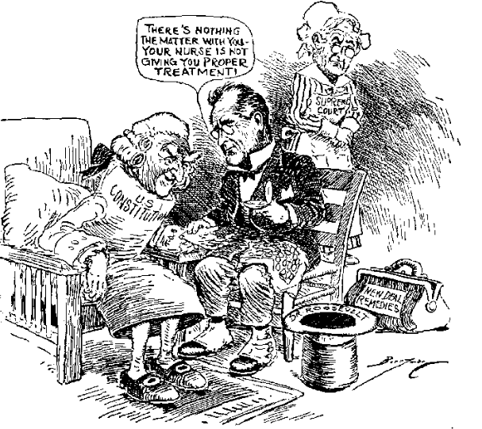
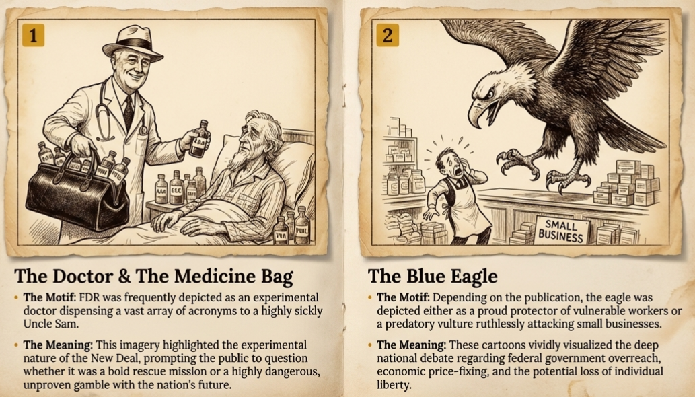

Core Objectives
- Categorize major New Deal agencies (CCC, WPA, NRA, AAA, FDIC, SEC) by their primary function: Relief, Recovery, or Reform.
- Evaluate the economic and social impact of job creation programs like the Civilian Conservation Corps (CCC) and the Works Progress Administration (WPA).
- Analyze the constitutional challenges to the New Deal, specifically the Supreme Court's strikedown of the NRA and AAA, and FDR's subsequent "Court Packing" plan.
Key Terms
Relief, Recovery, Reform CCC WPA AAA NRA TVA FDIC SEC Glass-Steagall Act Schechter Poultry Corp v. U.S. Court Packing Plan
The Three R's of the New Deal

Spotlight 1 Analysis: Why was Roosevelt’s direct public explanation of Relief, Recovery, and Reform historically significant in changing Americans’ expectations about what the federal government should do during an economic crisis?
When Franklin D. Roosevelt took office in 1933, he did not have a single, unified blueprint for ending the Great Depression. Instead, he brought a spirit of "bold, persistent experimentation" to Washington, believing that it was more important to act than to be ideologically consistent. To organize this chaotic flurry of legislation, historians and economists often categorize the New Deal programs into three distinct goals: Relief, Recovery, and Reform. This framework helps explain how the government attempted to address the immediate suffering of the people while simultaneously trying to fix the broken machinery of the economy and prevent future collapses.
The first goal, Relief, was designed to provide immediate assistance to the millions of Americans who were currently starving, homeless, or without any source of income. These programs were the "emergency room" of the New Deal, focusing on direct aid or, more commonly, work relief. The second goal, Recovery, aimed at restarting the flow of consumer demand and industrial production. These were temporary programs intended to prime the economic pump and get the business cycle moving again. Finally, the third goal was Reform. Unlike the temporary relief and recovery measures, reform programs were intended to be permanent changes to the American financial and social system. These laws were designed to address the root causes of the 1929 crash, such as banking instability and stock market manipulation, ensuring that the nation would never again experience a depression of such magnitude.
The sheer volume of new agencies created during this time led to what critics and supporters alike called "Alphabet Soup." From the CCC to the SEC, the nation was suddenly flooded with new bureaucracies and acronyms. While this expansion of the federal government was confusing to many, it signaled a fundamental shift in the American experience. For the first time, the federal government was assuming a direct, hands-on role in managing the daily economic life of its citizens. The success or failure of these agencies would determine the fate of the Roosevelt presidency and the future of the American republic.

Franklin D. Roosevelt's New Deal policies operated through three distinct but interconnected frameworks: immediate relief for the impoverished, temporary recovery programs to stimulate economic growth, and permanent structural reforms to prevent future financial collapse. This multifaceted approach allowed the federal government to simultaneously address short-term crises and long-term economic instability.
1. How did the division of the New Deal into Relief, Recovery, and Reform influence the government's approach to the Great Depression?
Relief: Putting America Back to Work

Spotlight 2 Analysis: How did the federal government’s decision to emphasize work relief through programs like the CCC affect both unemployed workers and the broader American landscape during the Depression?
Roosevelt was a firm believer that "work relief"—giving people a job paid for by the government—was far superior to "the dole," or direct cash payments. He believed that a steady paycheck provided more than just food and shelter; it provided the dignity and self-respect that the Depression had stripped away from the American worker. One of the most popular and successful of these programs was the CCC (Civilian Conservation Corps). Established in March 1933, the CCC focused on young men between the ages of 18 and 25. These men were sent to work camps in the nation's forests, parks, and rangelands. They planted trees, built hiking trails, developed fire towers, and worked on soil erosion projects.
The CCC was an environmental and social success. By the time the program ended in 1942, nearly 3 million young men had passed through its camps. They had planted over 3 billion trees and developed over 800 state parks. Each worker earned $30 a month, $25 of which was sent directly home to their families. This ensured that the relief money was distributed across the country, helping to support millions of people who were not themselves in the camps. The program also provided the workers with education, vocational training, and a sense of discipline and purpose. It remains one of the most enduring legacies of the New Deal’s commitment to human and natural resource conservation.
As the Depression persisted, the administration launched an even more massive work relief program in 1935: the WPA (Works Progress Administration). Led by Harry Hopkins, the WPA aimed to create as many jobs as possible as quickly as possible. Between 1935 and 1943, the WPA spent $11 billion and employed more than 8 million people. The scale of the WPA’s construction projects was staggering. Its workers built 651,000 miles of roads, 125,000 public buildings, and 853 airports. But the WPA was unique because it also recognized that professionals and artists were suffering as much as laborers. The WPA's Federal Art Project, Federal Writers' Project, and Federal Theater Project hired painters to create murals in post offices, writers to collect oral histories from former slaves, and actors to perform in communities that had never seen a live play. This investment in culture ensured that the American spirit survived alongside the American economy.
1. Why did the Roosevelt administration prioritize "work relief" programs like the CCC over direct cash payments?
Recovery: Healing the Farm and the Factory

Spotlight 3 Analysis: How did the NRA’s approach to industrial recovery differ from the AAA’s approach to agricultural recovery, and what does that difference reveal about New Deal economic strategy?
While relief programs addressed the human toll of the Depression, the recovery programs attempted to fix the underlying industrial and agricultural systems. The most controversial and ambitious of these was the NRA (National Recovery Administration), created by the National Industrial Recovery Act (NIRA). The NRA was designed to stop the destructive cycle of falling prices and wages in the industrial sector. It encouraged businesses in the same industry to work together to draft "codes of fair competition." These codes set minimum prices, established maximum work hours, and guaranteed the right of labor to organize and bargain collectively.
The NRA was symbolized by the "Blue Eagle" logo, which businesses displayed to show they were "doing their part" by following the codes. The philosophy behind the NRA was that if businesses stopped competing by cutting wages, workers would have more money to spend, which would eventually lead to higher demand and a return to profitability. However, the NRA struggled with enforcement. Small businesses complained that the codes were written by and for large corporations, and many critics argued that the NRA’s price-fixing was actually a form of socialism that interfered with the free market. Despite its popularity in the early days of the New Deal, the NRA’s complexity and its tendency to favor big business eventually led to a loss of public and legal support.
In the agricultural sector, the administration faced a paradox: farmers were going bankrupt because they were producing too much, which drove prices so low that they couldn't cover the cost of production. To solve this, Congress passed the AAA (Agricultural Adjustment Act). The AAA was based on the theory of "scarcity." The government essentially paid farmers a subsidy to leave a portion of their land unplanted or to destroy a portion of their crops and livestock. The goal was to reduce the supply of agricultural products, which would naturally drive prices up. While the AAA did succeed in raising farm income, it was highly controversial. Many Americans, who were standing in breadlines and suffering from hunger, were outraged by the sight of the government paying farmers to plow under cotton fields and slaughter millions of healthy pigs. Furthermore, the AAA often hurt tenant farmers and sharecroppers, as landowners would take the government subsidies and then evict the laborers they no longer needed for the reduced acreage.
1. What was the intended economic effect of the National Recovery Administration's (NRA) "codes of fair competition"?
Regional Recovery: The TVA

Spotlight 4 Analysis: How did the poverty, underdevelopment, and environmental problems of the Tennessee Valley make large-scale federal planning appear necessary during the New Deal?
Perhaps the most ambitious regional recovery project was the TVA (Tennessee Valley Authority). Established in May 1933, the TVA was designed to revitalize the Tennessee River Valley, one of the poorest and least developed regions in the country. The project involved the construction of a massive series of dams to control the river's frequent and devastating floods. But the TVA did much more than control water. The dams were used to generate cheap hydroelectric power, bringing electricity to rural homes and farms for the first time.
The TVA was a transformative force. It provided thousands of jobs, improved navigation on the river, and taught farmers new techniques for soil conservation and crop rotation. By providing low-cost electricity, the TVA encouraged industrial development in the region, helping to lift the South out of its long-standing economic isolation. However, the TVA also faced fierce opposition from private utility companies, who argued that the government-run agency was an unfair competitor and a dangerous step toward "creeping socialism." Despite the legal battles, the TVA became a model for integrated regional planning, demonstrating that the federal government could use its resources to transform the physical and economic landscape of an entire region.
1. In addition to controlling floods, what was a major regional impact of the Tennessee Valley Authority (TVA)?
Reform: Rebuilding the Financial Foundation

Spotlight 5 Analysis: Why were banking and stock market reforms such as the FDIC and SEC historically significant in reshaping the long-term relationship between ordinary Americans and the financial system?
The third "R" of the New Deal, Reform, focused on the long-term changes needed to ensure that the American financial system remained stable. The most immediate concern was the banking system, which had collapsed in 1933. To prevent future "bank runs" and restore public trust, Congress passed the Glass-Steagall Act in 1933. This landmark law required a strict separation between commercial banking and investment banking. It prohibited banks that held people’s everyday deposits from gambling with that money in the stock market. Most importantly, the act created the FDIC (Federal Deposit Insurance Corporation), which provided federal insurance for individual bank accounts. Today, if a bank fails, the FDIC ensures that depositors get their money back, up to a certain limit. This reform effectively ended the era of bank runs in America.
The administration also turned its attention to the stock market, which had been a Wild West of manipulation and insider trading in the 1920s. In 1934, the SEC (Securities and Exchange Commission) was created to regulate the stock market and prevent the kind of fraudulent activities that had led to the 1929 crash. The SEC required companies to provide full and accurate information about their financial health before selling stock to the public. It also restricted the practice of buying on margin, which had fueled the speculative bubble of the 1920s. By bringing transparency and accountability to Wall Street, the SEC sought to protect small investors and ensure that the market functioned as a place for legitimate investment rather than a giant casino.
These reform measures represented a permanent expansion of federal power over the private sector. They were based on the realization that in a modern, interconnected economy, the failure of a single large bank or a fraudulent stock market could cause a national catastrophe. By establishing the FDIC and the SEC, the New Deal created a regulatory framework that remains the foundation of the American financial system today. While these measures were seen as radical at the time, they eventually gained widespread support as they successfully stabilized the economy and protected the savings and investments of millions of ordinary citizens.
1. How did the Glass-Steagall Act and the creation of the FDIC attempt to stabilize the banking system?
The Constitutional Crisis and the Court Packing Plan

Spotlight 6 Analysis: How did Supreme Court decisions against major New Deal programs lead Roosevelt to propose the Court Packing Plan, and why did that proposal trigger such strong opposition?
Despite the popularity of many New Deal programs, the Roosevelt administration soon ran into a formidable obstacle: the United States Supreme Court. In the mid-1930s, the Court was dominated by a group of conservative justices who believed that the New Deal represented an unconstitutional expansion of federal power. They argued that many of the new laws violated the "commerce clause" of the Constitution, which limited the federal government's power to regulate business that took place entirely within a single state. The first major blow came in 1935 with the case of Schechter Poultry Corp v. U.S., often called the "sick chicken" case.
The Schechter case involved a poultry company in New York that had been accused of violating the NRA’s codes of fair competition. The Supreme Court ruled unanimously that the National Industrial Recovery Act was unconstitutional. The justices argued that the law gave the president too much legislative power and that the federal government had no authority to regulate a business that operated locally. This ruling effectively destroyed the NRA, the centerpiece of the New Deal’s industrial recovery program. Shortly after, in the case of U.S. v. Butler, the Court struck down the Agricultural Adjustment Act (AAA), ruling that agriculture was a local matter that should be regulated by the states, not the federal government. By early 1937, it appeared that the Supreme Court was systematically dismantling the entire New Deal.
Roosevelt, fresh from his landslide reelection in 1936, was outraged. He believed that the "nine old men" on the Court were out of touch with the needs of the country and were obstructing the will of the people. In February 1937, he proposed a radical solution: the Court Packing Plan. Roosevelt asked Congress for the power to appoint a new Supreme Court justice for every current justice who reached the age of 70 and did not retire, up to a total of six new justices. Roosevelt argued that the aging justices needed help handling their workload, but everyone understood his true motive: he wanted to "pack" the Court with liberal justices who would support his programs.
The Court Packing Plan proved to be a major political miscalculation. It was met with immediate and widespread criticism from both Republicans and Democrats, who saw it as a dangerous attempt to destroy the independence of the judicial branch and upset the system of checks and balances. Critics accused Roosevelt of acting like a dictator. Even many of his most ardent supporters felt that he had gone too far. Although the plan ultimately failed in Congress, it had an interesting effect on the Court itself. Shortly after the plan was proposed, one of the conservative justices began voting to uphold New Deal legislation, and another retired, allowing Roosevelt to make a liberal appointment. This shift became known as the "switch in time that saved nine." While Roosevelt technically lost the battle over the Court Packing Plan, he ultimately won the war to preserve the New Deal, as the Court became increasingly supportive of federal intervention in the economy.
1. On what constitutional grounds did the Supreme Court strike down early New Deal programs like the NRA?
Voices in Ink: Political Cartoon Analysis
The "Alphabet Soup" Agencies.
During the mid-1930s, the Roosevelt administration created a staggering number of new federal agencies, each known by its initials. This rapid expansion of the bureaucracy was a gift to political cartoonists. Critics used the "Alphabet Soup" as a symbol of government waste, confusion, and overreach. They depicted FDR as a doctor, a magician, or a confused chef, trying to fix the nation with an endless series of unproven "remedies." These cartoons reflected a deep national debate: was this a bold rescue mission, or was it a dangerous experiment that would lead to the loss of individual liberty?
Visual Symbols
Common symbols in these cartoons included the "Blue Eagle" of the NRA, which was often shown as a predatory bird or a dying one, and the "bag of tricks" or "medicine cabinet" overflowing with acronyms. One famous cartoon showed FDR as a "Doctor" bringing a suitcase full of "New Deal remedies" to a sick Uncle Sam. Another showed the White House literally buried under a mountain of letters representing the different agencies. These images captured the sense of a nation being transformed by a government that seemed to be growing faster than anyone could track.

The rapid proliferation of New Deal agencies created a vast and complex bureaucracy that critics quickly dubbed an "Alphabet Soup." Political satire of the era frequently highlighted the experimental nature of Roosevelt's policies and the resulting public confusion over the unprecedented expansion of federal executive power.
Analyzing the Satire
Satire allowed Americans to process the massive changes happening in their government. By depicting the New Deal as a "soup" or a "game of cards," cartoonists could point out the inconsistencies and the experimental nature of Roosevelt's policies. For example, a cartoonist might show FDR dealing cards labeled CCC, WPA, and AAA to a group of confused citizens, suggesting that the president was "gambling" with the nation's future. This visual shorthand was essential for a public that was often overwhelmed by the complex economic theories behind the New Deal.
Perspective Questions
Analyze the Imagery: Why did cartoonists frequently depict FDR as a doctor with a medicine bag labeled with various acronyms? How did this choice of imagery affect the public’s perception of the New Deal as a temporary "cure" versus a permanent change to the government?
Compare Viewpoints: Contrast a cartoon that shows the "Blue Eagle" of the NRA as a protector of workers with one that shows it as a vulture preying on small businesses. How do these differing perspectives explain the eventual failure of the NRA to maintain public support?
Evaluate Strategy: Why was a political cartoon often more effective in communicating criticism of the New Deal than a long, academic speech by a politician? Consider the role of visual simplicity in shaping public opinion during a time of crisis and confusion.
Vocabulary Activity
When Franklin D. Roosevelt took office, he implemented the New Deal, which was categorized into three main goals: providing immediate to the suffering, spurring economic to get businesses moving again, and passing permanent to prevent future depressions. To put young men to work in environmental conservation, the government created the , while the provided massive public works jobs and even hired artists and writers. To fix the industrial sector, the established codes of fair competition, but it was later struck down by the Supreme Court in the landmark decision. Meanwhile, the addressed agricultural overproduction by paying farmers to reduce crop supply. Regional revitalization was spearheaded by the , which built dams to provide cheap hydroelectric power to the South. To restore trust in the financial system, the separated commercial and investment banking, which also created the to insure individual bank deposits. Furthermore, the was established to regulate the stock market and prevent rampant speculation. Frustrated by the Supreme Court striking down his programs, FDR proposed the controversial to add liberal justices to the bench, though it ultimately failed due to bipartisan backlash.